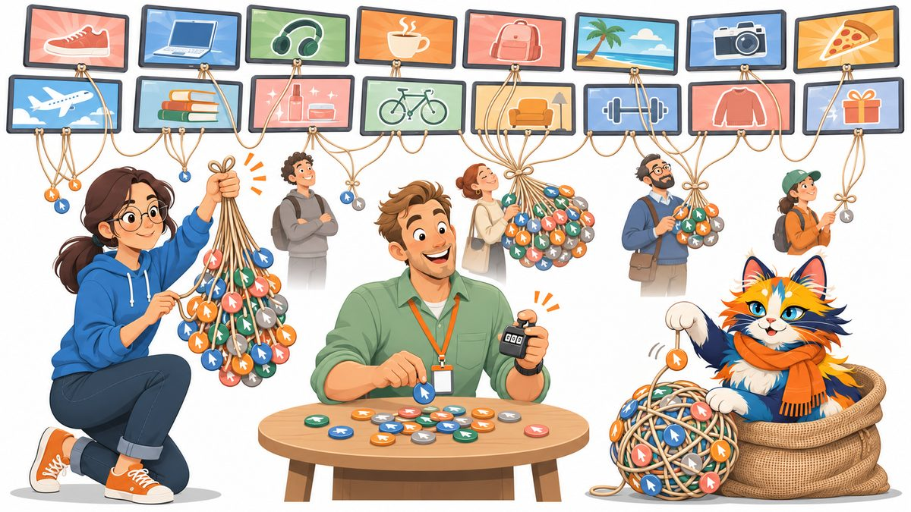

Занятие 5 · блок 7
Единица наблюдения и ratio-метрики


CTR вырос с 10.0% до 10.2% на миллионе показов. z = 2.1 — победа?
CTR, средний чек, конверсия визита в заказ — отношения двух сумм. Делим мы пользователей, а считаем по событиям. Если подставить события в t-тест как независимые наблюдения, он начинает прокрашивать пустышки — без единой ошибки в коде.
Ratio-метрика и единица наблюдения
Ratio-метрика — отношение сумм по пользователям группы: , где у пользователя : — показы, — клики, или заказы и деньги. Мы её видели в занятии 3.
В группу случайно попадают пользователи, поэтому независимы пользователи, а не показы: показы одного человека похожи между собой, у него свой «личный» CTR.
Правило: единица анализа совпадает с единицей рандомизации — или зависимость учитывают явно, как в блоке 8.
Задача 12. CTR по событиям: что не так?
В A/A-тесте 2 000 пользователей в группе, у каждого около 20 показов и свой личный CTR: у кого-то 2%, у кого-то 25%. Алиса считает z-тест для долей, где наблюдение — показ, 40 000 показов в группе. Как часто такой тест прокрасит A/A?
Независимы пользователи, а не события
Наблюдения, которые подставляем в критерий, должны быть независимы. Независимы единицы рандомизации — пользователи, — а не их события. t-тест по событиям для ratio-метрики завышает .